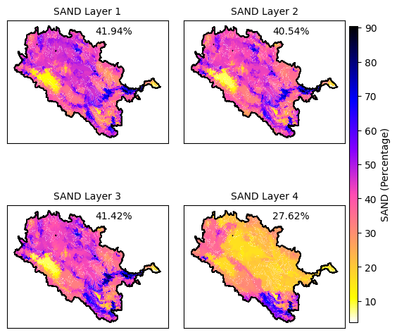

VisualizationPrep
[1]:
import os
import sys
# Define the folder path
folder_path = r'D:\2_CodeProjects\GitHub\Repos\MESH-Scripts-PyLib\src'
# Check if the folder is already in sys.path, if not, add it
if folder_path not in sys.path:
sys.path.append(folder_path)
[4]:
import os
from VectorPostProcessing.plt_var_vector_setup import plt_var_from_vector_ddb_netcdf
# Option 1: Use forward‐slashes throughout
base_dir = "D:/3a_ModelSimulations/MESH/Baseline/sras-agg-model_1/MESH-sras-agg"
shp_dir = "D:/3a_ModelSimulations/MESH/Baseline/sras-agg-model_1/geofabric-outputs"
# Option 2: (equivalent) use a raw‐string literal so that backslashes aren’t escapes:
# base_dir = r"D:\3a_ModelSimulations\MESH\Baseline\sras-agg-model_1\MESH-sras-agg"
# shp_dir = r"D:\3a_ModelSimulations\MESH\Baseline\sras-agg-model_1\geofabric-outputs"
shapefile_path = os.path.join(shp_dir, "sras_subbasins_MAF_Agg.shp")
netcdf_path = os.path.join(base_dir, "MESH_drainage_database.nc")
output_dir = os.path.join(base_dir, "Outputs")
# make sure Outputs exists
os.makedirs(output_dir, exist_ok=True)
output_path = os.path.join(output_dir, "GRU.png")
# define your land‐use classes
lclass = [
'Temperate or sub-polar needleleaf forest',
'Sub-polar taiga needleleaf forest',
'Temperate or sub-polar broadleaf deciduous forest',
'Mixed forest', 'Temperate or sub-polar shrubland',
'Temperate or sub-polar grassland',
'Sub-polar or polar grassland-lichen-moss',
'Wetland', 'Cropland', 'Barren lands', 'Urban',
'Water', 'Dump'
]
# sanity‐check that the files exist
for p in (shapefile_path, netcdf_path):
if not os.path.isfile(p):
raise FileNotFoundError(f"Can't find file: {p!r}")
plt_var_from_vector_ddb_netcdf(
output_basin_path=shapefile_path,
ddbnetcdf_path=netcdf_path,
variable_name='GRU',
save_path=output_path,
text_location=(0.55, 0.95),
font_size=10,
cmap='gnuplot2_r',
cbar_location=[0.91, 0.15, 0.02, 0.7],
subplot_adjustments={'left': 0.1, 'right': 0.9, 'bottom': 0.1, 'top': 0.9,
'wspace': 0.1, 'hspace': 0.2},
subbasin_var='subbasin',
comid_var='COMID',
landuse_classes=lclass,
grudim='NGRU',
grunames_var='LandUse',
sort_gru_by_mean=True
)
len(dims) == 2 and dims[1] == grudim

[3]:
import os
from VectorPostProcessing.plt_var_vector_setup import plt_var_from_vector_ddb_netcdf
# Option 1: Use forward‐slashes throughout
base_dir = "D:/3a_ModelSimulations/MESH/Baseline/sras-agg-model_1/MESH-sras-agg"
shp_dir = "D:/3a_ModelSimulations/MESH/Baseline/sras-agg-model_1/geofabric-outputs"
# Option 2: (equivalent) use a raw‐string literal so that backslashes aren’t escapes:
# base_dir = r"D:\3a_ModelSimulations\MESH\Baseline\sras-agg-model_1\MESH-sras-agg"
# shp_dir = r"D:\3a_ModelSimulations\MESH\Baseline\sras-agg-model_1\geofabric-outputs"
output_basin_path = os.path.join(shp_dir, 'sras_subbasins_MAF_Agg.shp')
ParametersNetcdf = os.path.join(base_dir, 'MESH_parameters.nc')
variable_name = 'SAND' # or 'GRU' or any other variable in the drainage database netcdf file
save_path = os.path.join(base_dir, 'Outputs', f'{variable_name}.png')
plt_var_from_vector_ddb_netcdf(
output_basin_path,
ParametersNetcdf,
variable_name,
save_path,
text_location=(0.55, 0.95),
font_size=10,
cmap='gnuplot2_r', # You can specify a different colormap here if needed
cbar_location=[0.91, 0.15, 0.02, 0.7], # Custom colorbar location if needed
subplot_adjustments={'left': 0.1, 'right': 0.9, 'bottom': 0.1, 'top': 0.9, 'wspace': 0.1, 'hspace': 0.2}, # Optional subplot adjustments
subbasin_var='subbasin', # Default to 'subbasin' it is identifier from drainage database
comid_var='COMID', # Default to 'COMID' this is your shapefile identifier for merging
landuse_classes=None, # use None or specify lclass
grudim = 'NGRU', #from netcdf ddb
grunames_var = 'LandUse' #from netcdf ddb
)
len(dims) == 2 and dims[1] == soldim

[ ]:
from VectorPostProcessing.save_mesh_outputs_as_png import save_mesh_outputs_as_png
# Option 1: Use forward‐slashes throughout
base_dir = "D:/3a_ModelSimulations/MESH/Baseline/sras-agg-model_1/MESH-sras-agg"
shp_dir = "D:/3a_ModelSimulations/MESH/Baseline/sras-agg-model_1/geofabric-outputs"
netcdf_path = "D:/3a_ModelSimulations/MESH/Baseline/sras-agg-model_1/sras_MESH_PostProcessing/BASINAVG4"
shape_path = os.path.join(shp_dir, 'sras_subbasins_MAF_Agg.shp')
ddbnetcdf = os.path.join(base_dir, 'MESH_drainage_database.nc')
variable_name = 'SAND' # or 'GRU' or any other variable in the drainage database netcdf file
save_path = os.path.join(netcdf_path, 'Outputs')
save_mesh_outputs_as_png(
shapefile_path=shape_path,
netcdf_dir=netcdf_path,
ddb_path=ddbnetcdf,
varnames=['QO', 'SNO'],
filenames=['QO_Y_GRD.nc', 'SNO_Y_GRD.nc'],
cbar_labels=['Discharge [m³/s]', 'Snow Mass [mm]'],
outdir=save_path,
indices_to_save=[0, 5, 10, 20],
mode='yearly',
domain_name='SrAs',
comid_field='COMID'
)
[ ]:
from VectorPostProcessing.save_mesh_outputs_as_png import save_mesh_outputs_as_png
# Option 1: Use forward‐slashes throughout
base_dir = "D:/3a_ModelSimulations/MESH/Baseline/sras-agg-model_1/MESH-sras-agg"
shp_dir = "D:/3a_ModelSimulations/MESH/Baseline/sras-agg-model_1/geofabric-outputs"
netcdf_path = "D:/3a_ModelSimulations/MESH/Baseline/sras-agg-model_1/MESH-sras-agg"
shape_path = os.path.join(shp_dir, 'sras_subbasins_MAF_Agg.shp')
ddbnetcdf = os.path.join(base_dir, 'MESH_drainage_database.nc')
variable_name = 'SAND' # or 'GRU' or any other variable in the drainage database netcdf file
save_path = os.path.join(netcdf_path, 'Outputs')
save_mesh_outputs_as_png(
shapefile_path=shape_path,
netcdf_dir=netcdf_path,
ddb_path=ddbnetcdf,
varnames=['RDRS_v2.1_P_TT_09944'],
filenames=['MESH_forcing.nc'],
cbar_labels=['Temperature [K]'],
outdir=save_path,
indices_to_save=[0, 5, 10, 20],
mode='hourly',
domain_name='SrAs',
comid_field='COMID',
cmap= 'gnuplot2_r' # Specify a colormap if needed
)
[ ]:
import os
from VectorPostProcessing.animate_var_vector_setup import animate_mesh_outputs_to_gif
# Option 1: Use forward‐slashes throughout
base_dir = "D:/3a_ModelSimulations/MESH/Baseline/sras-agg-model_1/MESH-sras-agg"
shp_dir = "D:/3a_ModelSimulations/MESH/Baseline/sras-agg-model_1/geofabric-outputs"
netcdf_path = "D:/3a_ModelSimulations/MESH/Baseline/sras-agg-model_1/sras_MESH_PostProcessing/BASINAVG4"
shape_path = os.path.join(shp_dir, 'sras_subbasins_MAF_Agg.shp')
ddbnetcdf = os.path.join(base_dir, 'MESH_drainage_database.nc')
save_path = os.path.join(netcdf_path, 'Outputs')
animate_mesh_outputs_to_gif(
shapefile_path=shape_path,
netcdf_dir=netcdf_path,
ddb_path=ddbnetcdf,
varnames=['QO', 'SNO', 'PREC'],
filenames=['QO_Y_GRD.nc', 'SNO_Y_GRD.nc', 'PREC_Y_GRD.nc'],
cbar_labels=['Discharge [m³/s]', 'Snow Mass [mm]', 'Precipitation [mm]'],
outdir=save_path,
mode='monthly',
domain_name='SrAs',
comid_field='COMID',
cmap= 'gnuplot2_r' # Specify a colormap if needed
)